Magazín o bývaní

13
Feb
ZAUJÍMAVOSTI
Najočakávanejšie budovy roka 2023
Aj tento rok budú vo svete dokončené ďalšie stavebné veľdiela. Mnohé z nich trpezlivo očakáva celosvetová architektonická verejnosť. Nechýbajú medzi nimi projekty z Ázie, z Európy aj zo zámoria.
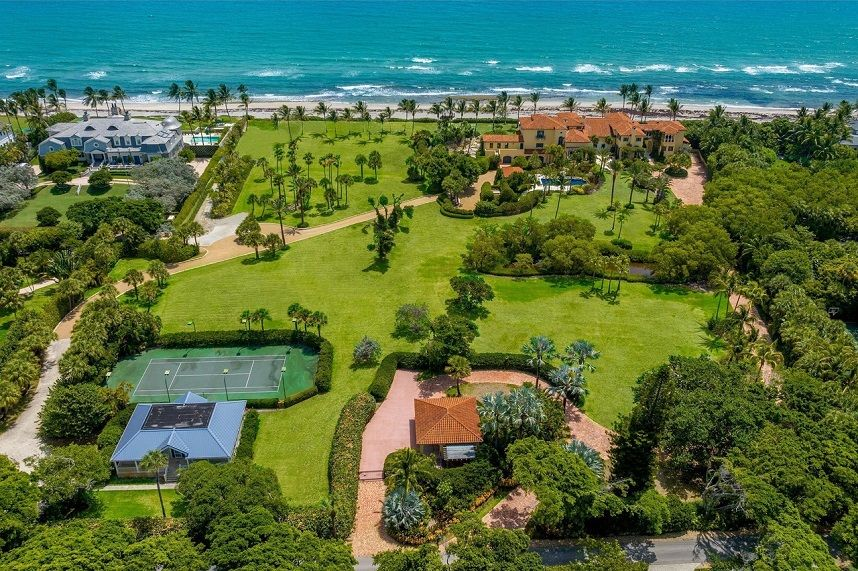
17
Feb
ZAUJÍMAVOSTI
Hviezdy amerického biznisu a šoubiznisu sa vlani opäť buchli poriadne po vrecku. Za nové luxusné rezidencie
vyhodili ešte viac peňazí ako rok predtým. Najväčšie realitné transakcie amerických celebrít za rok 2022 sa
počítajú v desiatkach miliónov dolárov

15
Feb
TECHNOLÓGIE A EKO RIEŠENIA
Dopyt po fotovoltických zariadeniach stúpa rekordným tempom takmer v celej Európe.
Výnimkou nie je ani susedná ČR, ktorá vlani zaznamenala ďalší výrazný nárast počtu nových pripojených zariadení.
V porovnaní s rokom 2021 ich bolo na českých budovách nainštalovaných skoro 4-násobne viac.

13
Feb
BÝVANIE A REKREÁCIA
Pri výstavbe rodinného domu sa môže stať všeličo a niektoré chyby dokážu naozaj nahnevať.
Krivé steny, prefukujúce okná, problémy s akustikou. To všetko, a ešte omnoho viac, je stále
nič oproti zanedbanému IGP. Čo táto skratka znamená a prečo
ju radíme takpovediac ku „genetickým“ rizikovým faktorom si povieme v dnešnom článku
Najčítanejšie v magazíne

08
DEC
NOVOSTAVBY
V novovznikajúcom rezidenčnom projekte Púpavy Hviezdoslav sa napĺňa ambícia priniesť do mesta
pod Zoborom bývanie pre mladé rodiny, ktoré bude mať úroveň, na akú sme boli zvyknutí len pri
luxusných projektoch. A to sa týka dispozícií bytov, ich vybavenia, ale aj použitých technológií.
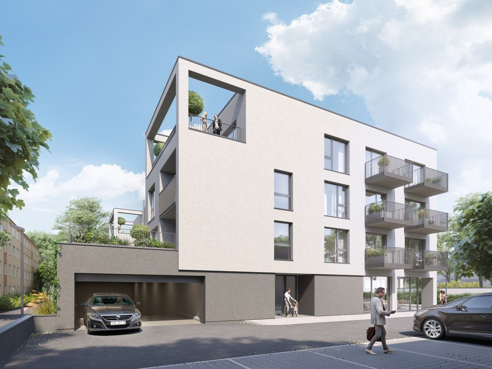
06
DEC
NOVOSTAVBY
Bývať moderne v kúpeľnom meste s pokojným, no kozmopolitným koloritom, a byť pritom v
pohodlnom dosahu Bratislavy, to je snom mnohých. Niekedy sa sny môžu plniť – a dôkazom
toho je aj rezidenčný projekt Mojmírka v Piešťanoch, ktorý je tesne pred dokončením.

30
NOV
BÝVANIE A REKREÁCIA
Nedostatok bytov, rastúce ceny materiálov a stále prísnejšie podmienky na získanie hypotéky vyháňajú
ceny nehnuteľností do výšok, ktoré si môže dovoliť málokto z nás. Aj v hlavnom meste však rastie projekt,
ktorý ponúka kvalitné bývanie za rozumnú cenu. Po úspešnej prvej etape ponúka projekt Ovocné sady jedinečnú
možnosť bývať výhodne a už do dvoch rokov.
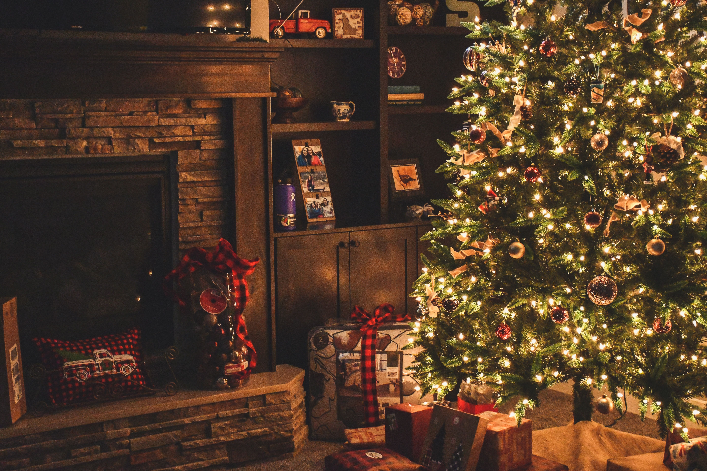
23
NOV
ZAUJÍMAVOSTI
Rok čo rok prichádza mráz a s ním vianočné reklamy v televízií spolu s tematickým sortimentom v obchodoch.
Asi nám dáte za pravdu, že na vytvorenie pravej vianočnej atmosféry to nestačí. Ponúkame vám pár tipov, ako
si tento čas v roku vychutnať a priniesť si domov kúsok Vianoc.
Odborné analýzy
Zobraziť všetky
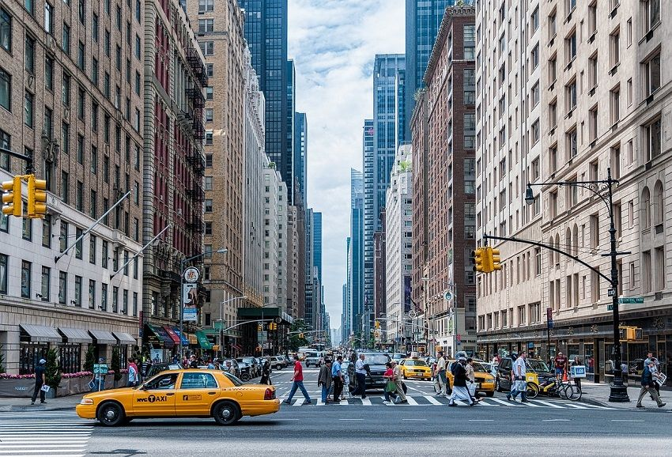
16
JAN
ODBORNÉ ANALÝZY
Poradie v rebríčku najdrahších metropol sa výrazne premiešalo. Kľúčové ekonomické a geopolitické
udalosti tohto roka ovplyvnili náklady na život vo viacerých mestách sveta, čo viedlo k zmene aj
na popredných priečkach. Tú vedúcu obsadil prvýkrát New York.
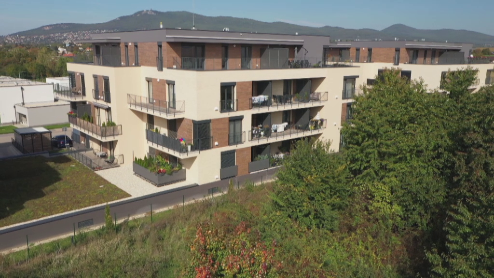
12
JAN
ODBORNÉ ANALÝZY
Na konci roku 2022 priemerná cena bytov na Slovensku už druhý štvrťrok poklesla vo všetkých regiónoch.
Napriek niektorým prognózam je však pokles všade len v jednotkách percent a vo väčšine okresov sa k
cenám z roku 2021 zďaleka nepriblížil. Potvrdzujú to aktuálne údaje z aplikácie Trhové reporty realitného
portálu Nehnuteľnosti.sk.
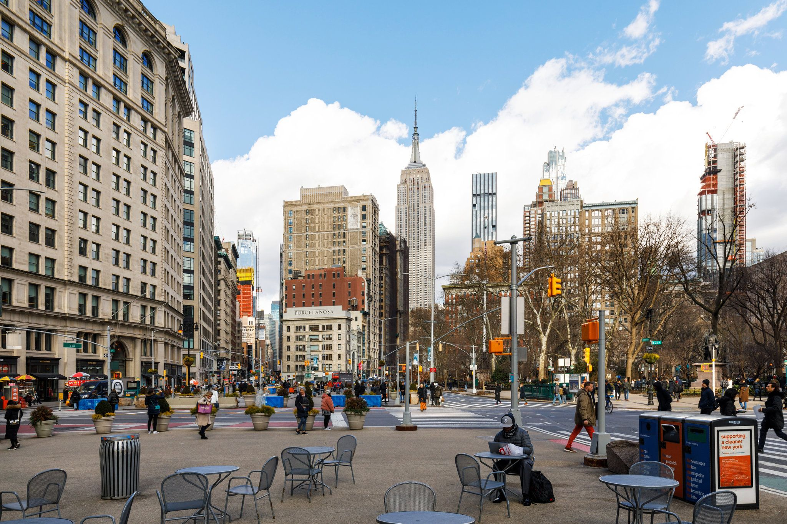
28
DEC
ODBORNÉ ANALÝZY
Na tieto miesta nechoďte bez dozoru! Ale pozerať sa môžete.
Legislatíva
Zobraziť všetky
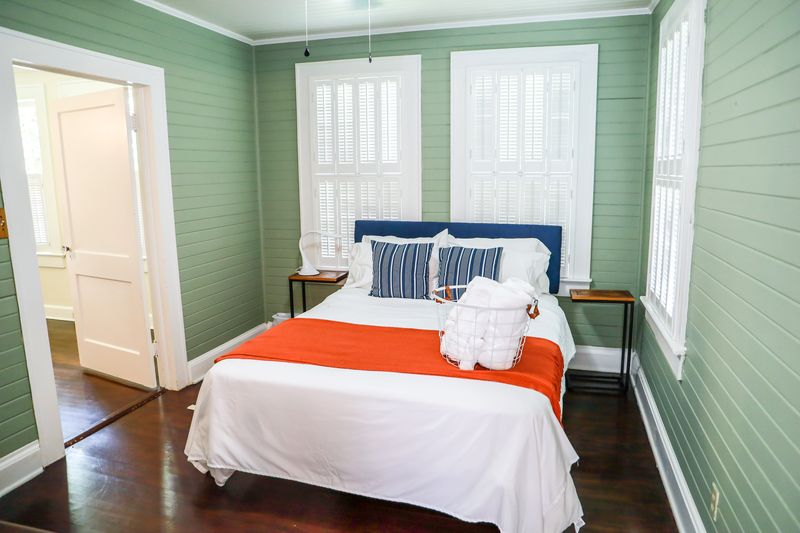
21
DEC
LEGISLATÍVA
Krátkodobý prenájom je vhodný pre turistov, na študentské alebo pracovné pobyty,
no prenajímateľ môže prenajímať svoju nehnuteľnosť aj na 2 roky podľa
zákona o Krátkodobom nájme bytu. Jedná sa totiž o iný typ nájomnej zmluvy, ako pri dlhodobom prenájme.
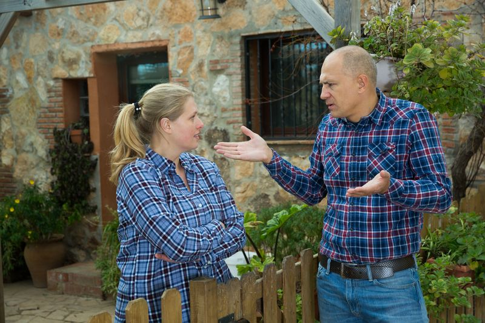
09
NOV
LEGISLATÍVA
Rozhádaný sused vás nechce pustiť do dvora, aby ste udržiavali svoju fasádu,
ktorá s ním susedí? Občiansky zákonník predpisuje prípady, kedy vás pustiť musí. JUDr.
Veronika Michalíková z AKMV advokátskej kancelárie nám objasnila, ktoré to sú.
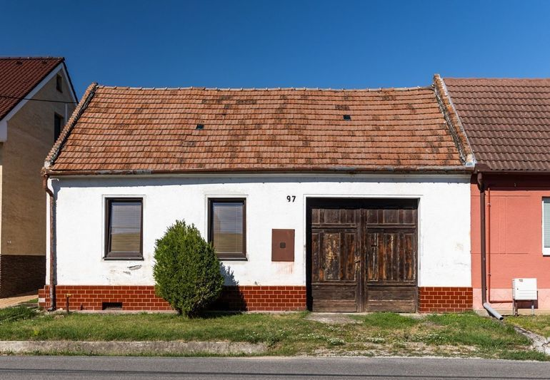
10
OCT
LEGISLATÍVA
Do spustenia jedného z najväčších dotačných programov súvisiacich s obnovou budov ostáva už len
niekoľko dní. Majitelia starších rodinných domov budú môcť požiadať o príspevok na obnovu svojej
nehnuteľnosti už v polovici októbra
PR články
Zobraziť všetky
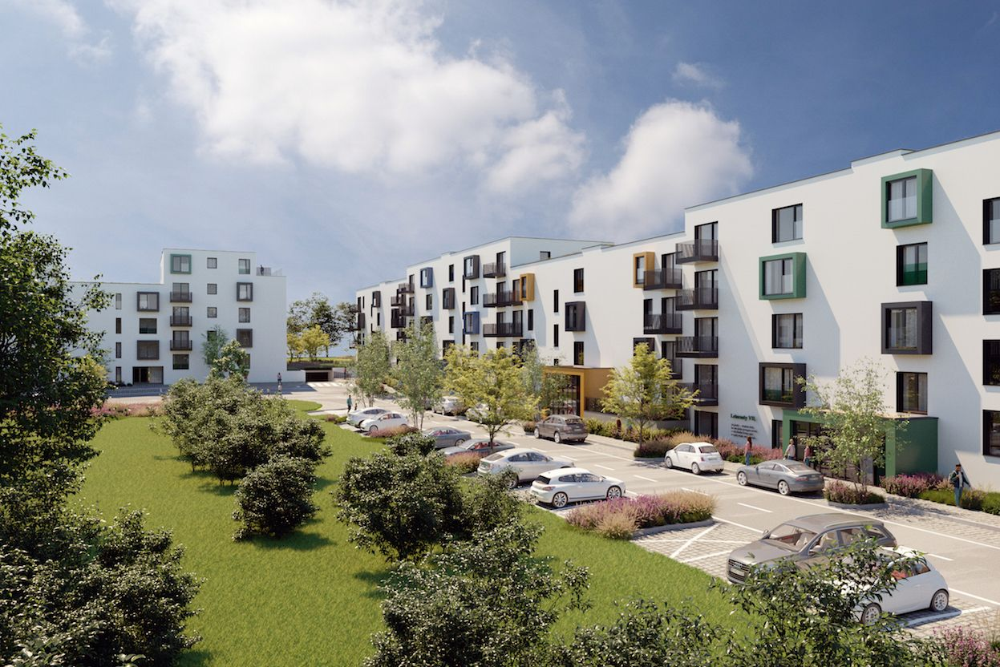
08
DEC
NOVOSTAVBY
V novovznikajúcom rezidenčnom projekte Púpavy Hviezdoslav sa napĺňa ambícia priniesť do mesta pod Zoborom
bývanie pre mladé rodiny, ktoré bude mať úroveň, na akú sme boli zvyknutí len pri luxusných projektoch. A
to sa týka dispozícií bytov, ich vybavenia, ale aj použitých technológií.

06
DEC
NOVOSTAVBY
Bývať moderne v kúpeľnom meste s pokojným, no kozmopolitným koloritom, a byť pritom v pohodlnom
dosahu Bratislavy, to je snom mnohých. Niekedy sa sny môžu plniť – a dôkazom toho je aj rezidenčný
projekt Mojmírka v Piešťanoch, ktorý je tesne pred dokončením.

30
NOV
BÝVANIE A REKREÁCIA
Nedostatok bytov, rastúce ceny materiálov a stále prísnejšie podmienky na získanie hypotéky vyháňajú ceny nehnuteľností do
výšok, ktoré si môže dovoliť málokto z nás. Aj v hlavnom meste však rastie projekt, ktorý ponúka kvalitné bývanie za
rozumnú cenu. Po úspešnej prvej etape ponúka projekt Ovocné sady jedinečnú možnosť bývať výhodne a už do dvoch rokov.
Zaujímavosti
Zobraziť všetky
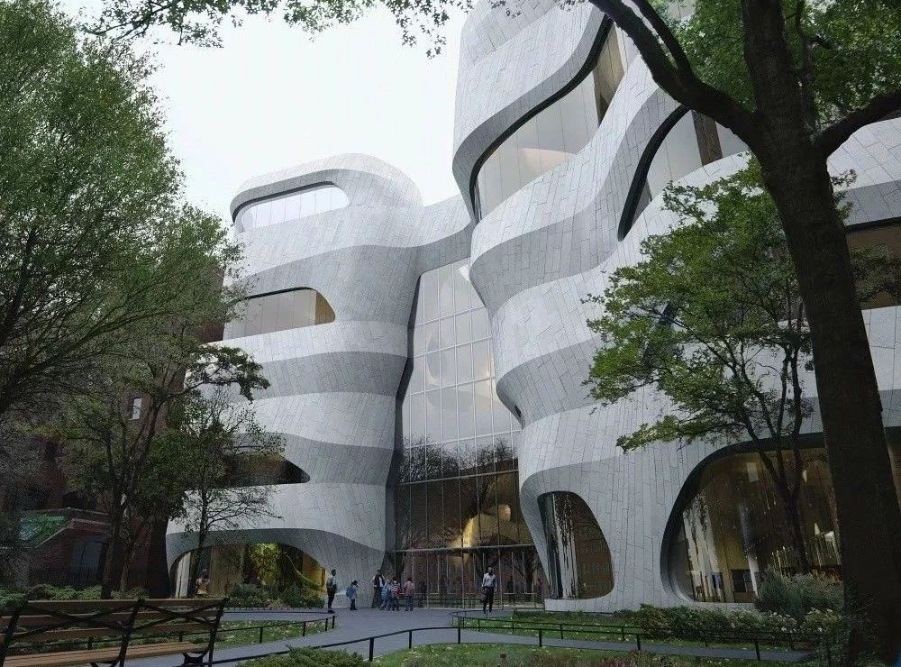
20
FEB
ZAUJÍMAVOSTI
Aj tento rok budú vo svete dokončené ďalšie stavebné veľdiela. Mnohé z nich trpezlivo
očakáva celosvetová architektonická verejnosť. Nechýbajú medzi nimi projekty z Ázie, z
Európy aj zo zámoria.

17
FEB
ZAUJÍMAVOSTI
Hviezdy amerického biznisu a šoubiznisu sa vlani opäť buchli poriadne po vrecku. Za nové luxusné
rezidencie vyhodili ešte viac peňazí ako rok predtým. Najväčšie realitné transakcie amerických
celebrít za rok 2022 sa počítajú v desiatkach
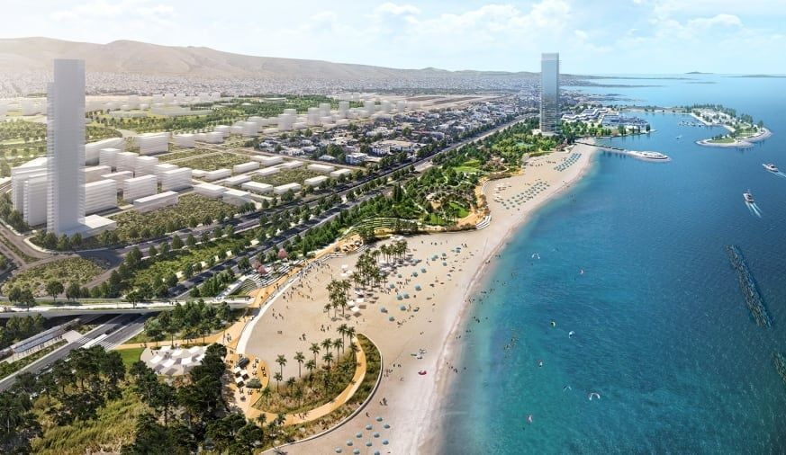
06
FEB
ZAUJÍMAVOSTI
V Grécku sa schyľuje k realizácii jedného z najväčších zelených projektov za posledné roky.
Jeho výsledkom bude obrovský pobrežný park s viacúčelovým využitím. Autori projektu sľubujú,
že pôjde o najväčší európsky park svojho druhu, navyše s klimatickou funkciou.
Novostavby
Zobraziť všetky
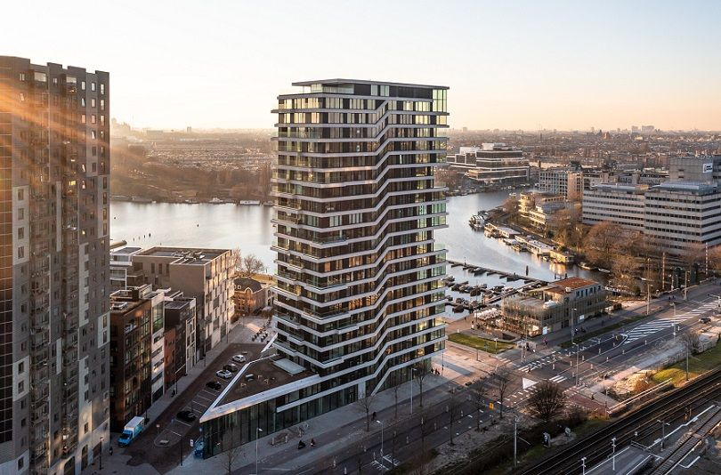
01
FEB
NOVOSTAVBY
Čo sa doposiaľ nepodarilo žiadnej holandskej rezidenčnej budove, to napráva nedávno dokončená
amsterdamská drevostavba. 21-poschodová stavba získala ako prvá obytná budova v Holandsku zelený
certifikát BREEAM s najvyšším hodnotením Outstanding. Zároveň sa zaradila do širšieho zoznamu
najvyšších drevostavieb na svete.
16
DEC
NOVOSTAVBY
Do kategórie supervysokých mrakodrapov sa ročne dostane iba zopár budov. Prestížny zoznam bol pred
niekoľkými týždňami rozšírený o
nový mrakodrap postavený v jednej z najlukratívnejších manhattanských štvrtí
14
DEC
NOVOSTAVBY
V Kysuckom Novom Meste sa podarilo vybudovať veľmi pekný projekt. Moderná mestská štvrť Kamence sa rozprestiera
na nábreží rieky Kysuca a ponúka svojim obyvateľom širokú infraštruktúru na pár krokov od prírody. Jej kvalitu
ocenili aj odborníci prestížnou cenou za architektúru CE ZA AR 2021.
Bývanie a rekreácia
Zobraziť všetky
13
FEB
BÝVANIE A REKREÁCIA
Pri výstavbe rodinného domu sa môže stať všeličo a niektoré chyby dokážu naozaj nahnevať. Krivé steny, prefukujúce okná, problémy s akustikou. To všetko, a ešte omnoho viac, je stále nič oproti zanedbanému IGP. Čo táto skratka znamená a prečo ju radíme takpovediac ku „genetickým“ rizikovým faktorom si povieme v dnešnom článku.
10
FEB
BÝVANIE A REKREÁCIA
Teplomer zatiaľ ukazuje nízke hodnoty, ale keď začne slniečko viac hriať, treba byť pripravený otvoriť mu náruč. Ak máte balkón v byte, ste jedným z tých šťastných, ktorí si môžu užívať svoj súkromný priestor pod holým nebom. Chcete sa inšpirovať, ako? Prinášame vám niekoľko šikovných balkónových riešení pre malé priestory.
03
FEB
BÝVANIE A REKREÁCIA
Čas, keď boli montované domy považované za lacné a škaredé, je dávno preč. Dnes sa do nich pustili mnohí talentovaní architekti vo svete a priniesli krásny dizajn v ekologickom prevedení. Nazývajú sa aj modulárne a v drvivej väčšine sú to drevostavby. Pozrite si náš výber tých najzaujímavejších.
Technológie a EKO riešenia
Zobraziť všetky
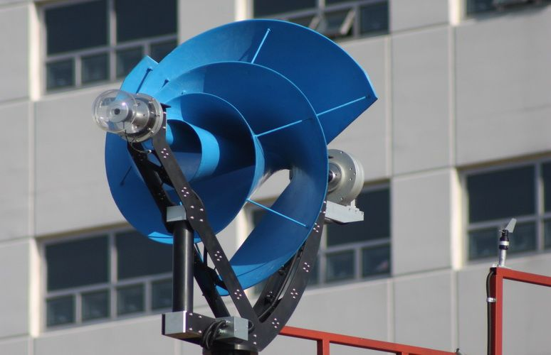
22
FEB
TECHNOLÓGIE A EKO RIEŠENIA
Na medzinárodný trh s veternými turbínami smerujú ďalšie nové modely. Najnovším trendom je výroba malých zariadení schopných vyrábať elektrinu z veternej energie aj v mestskom prostredí. Zariadenie tohto typu predstavili aj vývojári z Holandska.

15
FEB
TECHNOLÓGIE A EKO RIEŠENIA
Dopyt po fotovoltických zariadeniach stúpa rekordným tempom takmer v celej Európe. Výnimkou nie je ani susedná ČR, ktorá vlani zaznamenala ďalší výrazný nárast počtu nových pripojených zariadení. V porovnaní s rokom 2021 ich bolo na českých budovách nainštalovaných skoro 4-násobne viac.

08
FEB
TECHNOLÓGIE A EKO RIEŠENIA
Zoznam materiálov vhodných na tlač 3D domov sa postupne rozrastá. Bežnej betónovej zmesi môžu konkurovať klasické piliny z dreva. Tie poslúžili ako dominantný stavebný prvok pri realizácii domu v jednom z amerických univerzitných kampusov.